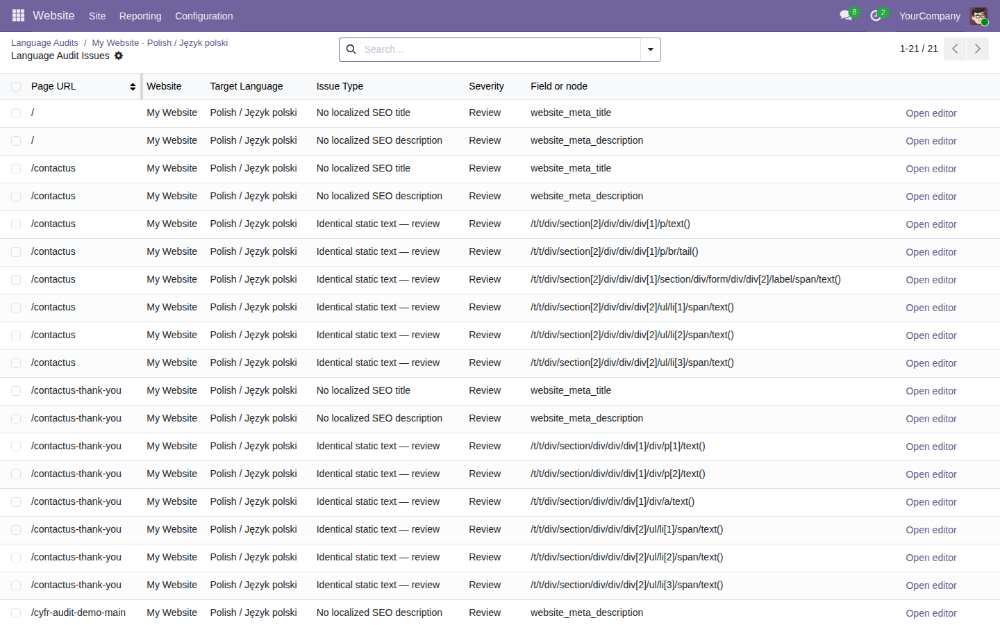

Review published pages for missing localized SEO fields, images without alt text, and static copy that matches the source language.
Free, open-source Odoo 19 addon (LGPL-3). Requires the standard website module.
Open Website → Reporting → Language Audits and scan published pages for a target language.

Tested on Odoo 19 Community. Findings are advisory: identical copy may be intentional, and an empty SEO title may use Odoo’s default. The scan checks stored static page content, not rendered JavaScript. Enterprise compatibility and large-site performance remain unverified.